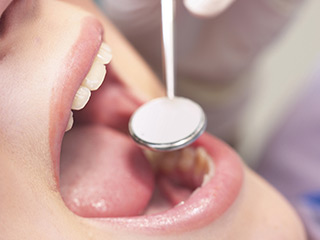
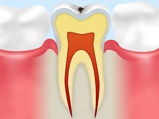
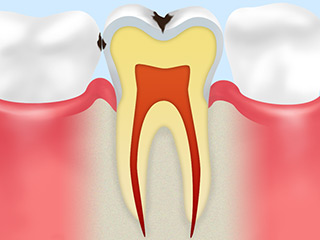
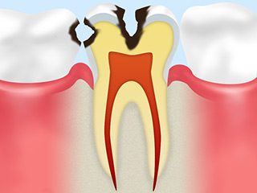
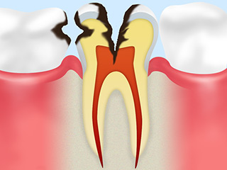
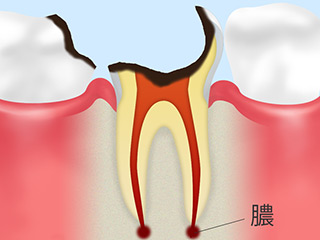
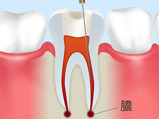
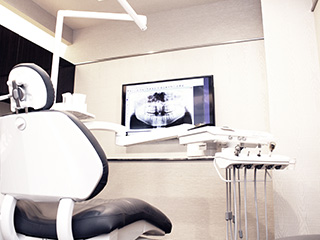

- ホーム
- 一般歯科メニュー｜虫歯・根管治療・小児歯科
General一般歯科
虫歯はもっとも身近なお口のトラブルです。ごく初期段階では自覚症状は現れませんので気づかないうちにどんどん進行します。つまり、「痛い」「しみる」と感じたときにはすでに悪化していることがあるということです。渋谷駅すぐの歯医者「渋谷ルーブル歯科・矯正歯科」では、軽度の虫歯治療だけでなく、神経にまで達した重度の虫歯の「根管（こんかん）治療」もご提供しますので、お口の違和感に気づいたときにはなるべく早くご相談ください。
「痛む・しみる」に気づいたら早めに治療しましょう～虫歯治療
このような症状はご相談ください
「冷たい物を口にするとしみる」
「飲食物を口にすると歯が痛む」
「歯の表面が白く濁って見える」
「歯が黒くなっている」
「歯に穴があいている」
虫歯の原因となる4つの要素
| 虫歯菌 | 糖質 |
|---|---|
| お口の中には3億以上の細菌が存在します。虫歯菌はその中の一種です。虫歯菌はプラーク（歯垢）の中にたくさん潜んでいます。 | お口の中の糖質を虫歯菌がエサにしてネバネバ成分をつくり歯に付着します。そしてそこで「酸」を出し、歯を溶かすのです。 |
| 歯質 | 時間 |
| 歯には抵抗力の強い歯とそうでない歯があります。また唾液の量や質も虫歯になりやすいかどうかを左右します。 | お口の中が汚れている状態が長く、虫歯菌と糖質が存在し、歯質が弱いと虫歯の発症リスクが高まります。 |
早期治療が大切です

ごく初期段階を除き、虫歯は一度発症するとどんどん進行し、自然治癒はしません。放っておくと健康な歯質が溶かされていき、神経にまで達すると痛みをともないます。さらに何もしなければ歯を失うことにもつながりますので、できるだけ早く治療して進行を止めることが大切です。
早期発見・早期治療ができれば、比較的かんたんな治療で済みます。そして健康な歯質を残すことができるのです。しかしいったん失ってしまった歯質は治療しても元には戻りませんので、早めの治療が大切なのです。
虫歯の進行段階と治療方法
※表は左右にスクロールして確認することができます。
| CO：ごく初期の虫歯 | C1：エナメル質の虫歯 |
|---|---|
|
 歯の表面のエナメル質の成分が溶け出し、白く濁って見える状態です。この段階では歯の汚れを落とし、フッ素塗布などをおこない歯の再石灰化を促すことで治癒が期待できます。 |
 さらにエナメル質が溶かされた状態です。歯が黒ずみ、穴があきはじめます。冷たい物を口にするとしみることもあります。汚染部分を削って、レジン（歯科用プラスチック）などで補います。 |
| C2：象牙質の虫歯 | C3：神経の虫歯 |
|
 エナメル質の内側の象牙質にまで進んだ虫歯です。甘い物や冷たい物を口にするとしみるようになります。虫歯部分を取り除いて、詰め物などで補います。 |
 さらに進行すると歯の中の神経が汚染されますので、何もしなくてもズキズキ痛みます。歯を残すためには精密さを要求される「根管治療」をおこないます。 |
| C4：歯の根の虫歯 | |
|
 歯の大部分が溶かされた状態です。神経が死んでしまうといったん痛みはなくなりますが、歯根の先に膿がたまるとふたたび激しく痛みます。ほとんどの場合、抜歯をして入れ歯治療やインプラント治療、またはブリッジ治療をおこないます。 |
ドックスベストセメント治療
虫歯治療はこれまでは、汚染部分をすっかり取り除かなければなりませんでした。そうしないと再発してしまうからです。しかし虫歯に汚染された歯質に細菌を殺菌する成分のお薬を詰めて治療する方法が開発されました。それがドックスベストセメント治療です。
ドックスベストセメント治療を活用すれば、これまでは神経を抜く「根管治療」が必要な状態の歯でも、歯を残せる可能性が広がります。歯の神経を取り除いてしまうと歯がもろくなり、歯の寿命を縮めることにつながりますが、神経が残っていれば歯の寿命を延ばすことが期待できるのです。
| メリット | デメリット |
|---|---|
|
|
重度の虫歯の治療です～根管治療～
歯の中の神経にまで達した重度の虫歯は、そのまま放置すると抜歯を余儀なくされます。しかし大切な歯はできるだけ残さなければ、お口全体の健康を損ねてしまいます。そこで歯を残すためにおこなうのが根管治療です。
根管治療とは

根管とは歯の神経が入っている細い管のことです。この中から虫歯菌に汚染された神経や血管、歯質を取り除き、内部を洗浄・消毒してから、薬剤をすき間なく詰めて密閉する処置が根管治療です。そのあと、支台を立てて被せ物などを装着して歯の機能回復をはかります。
根管はとても細く複雑な形状をしています。枝分かれしていることもありますが、根管治療では根管内部の細菌をすっかり取り除かなければなりません。そうしないと再発してしまうからです。とても細かい部位の細かい処置が要求されるうえ高い精度が求められます。
治療には根気が必要です！

前歯の根管治療をする場合は2～3回、奥歯の治療の場合には3～4回の治療回数がかかります。複雑な形状の場合には、さらに回数がかかることもあるのです。そのあとで、土台をつくり被せ物を装着するので、さらに少なくともあと3回はご来院いただかなければなりません。そのため、歯科医師だけでなく、患者様にも根気が必要です。
根管治療は抜歯を避けるための大切な治療ですので、もしここで治療を中断してしまうと、歯を失うリスクを負います。1本の歯を治すのに2ヶ月以上かかってしまう計算ですが、被せ物を装着するまで通ってください。お口の健康のために、治療を中断せず、しっかり終わらせましょう。
一般歯科